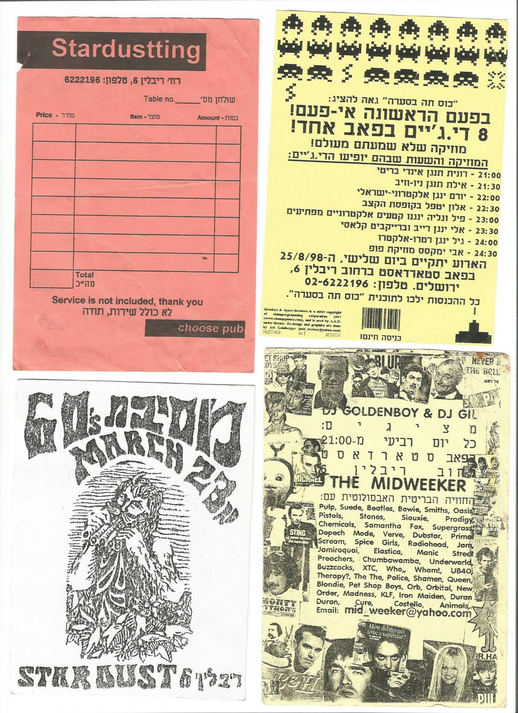
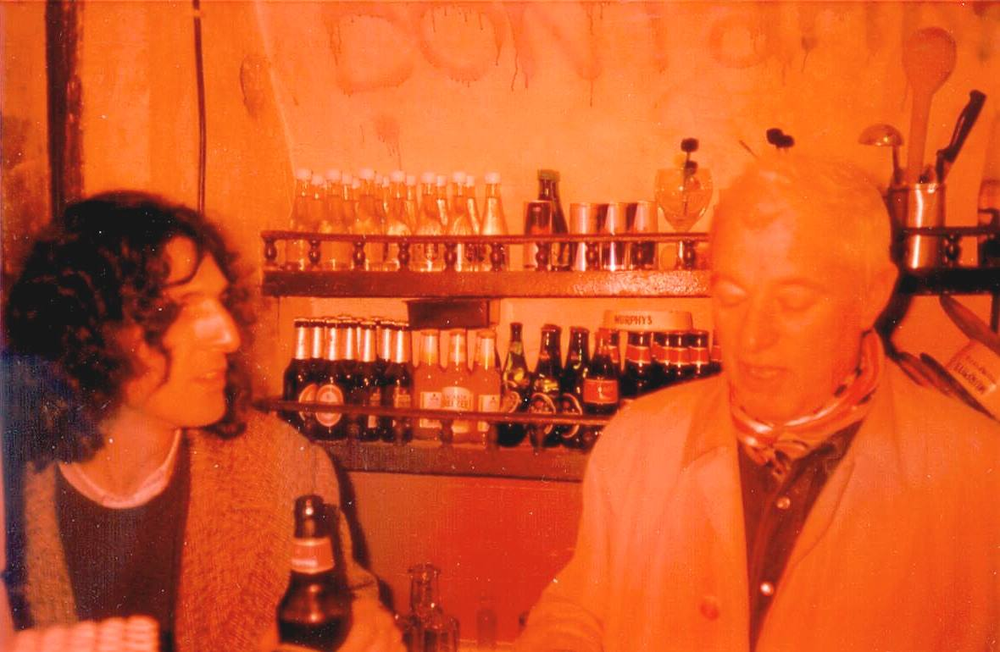

סטארדאסט
מקום
חגי ורועי למדו יחד באותו בית ספר ברמות, והכירו את אבי מהשכונה; ב-1998, כשהיו בני 19-21, אבי התחיל לנהל את הסטארדאסט, בר שהיה שייך לאישה זקנה בשכונת נחלת שבעה, ורועי שעבד אצלו הביא גם את חגי לעבוד איתם. הם הפכו את המקום מבר של אישה זקנה למקום יותר כיפי. אבי היה עורך ברדיו והיה מאוד מקושר, וכך ארגן הופעות ותקלוטים. הברים הרלוונטים האחרים שהיו בעיר היו הרוזה והדיוואן. רועי החליף את אבי כמנהל לשנה, אחרי כן רועי עזב וחגי היה המנהל. אחרי שנתיים רועי ואבי חזרו ושלושתם ניהלו את המקום ביחד. מאז הם שותפים עד לימינו בקסטה, התקליט והוידיאו.
המקום היה בעל שטח של 20 מטר וקצת, והאווירה שלו הייתה טיפה יותר נגישה ופחות אוונגרד ואמנותית מהרוזה, בתוכן וגם בגישה וסוג השירות. היו את המרכיבים האלה בסטארדאסט אבל העיקר היה הפאן והבילוי – מבחינתם הם רצו להנות במקום והיה חשוב שאנשים יהנו גם, המוטיבים המרכזיים היו של שמחת חיים ואהבת אדם. הקהל היה ירושלמים, סטודנטים, עיתונאים, חוצניקים, וההזויים של ירושלים.
בין המופיעים שם היו צ'ארלי מגירה, סרטן השד, סגול 59, חוזליטו, שבאב אל קודס עם אלון אבנת וטל מאירי, ודני בן ישראל. היו מסיבות של בריטפופ, מוזיקת שנות ה-60-70, מוזיקה ישראלית – דבר שלא היה נפוץ ומקובל בברים, התחיל על ידי רועי והפך לליין עם יונתן כהן שהביא את זה למרכז (הארץ והתרבות). בנוסף התרחשו מסיבות של מוזיקה אלקטרונית, והופעות ותקלוטים של אמני פאקט רקורדס. באופן קבוע היו משמיעים מוזיקה ומבלים עד 6-7 בבוקר. בתקופת 2003-2004 אסנת מהרוזה ארגנה מעין פסטיבל עירוני של אירועי מוזיקה שקרו במקביל ברוזה, בסטארדאסט ובדיוואן, סביב הלייבל מ.ר.י (מקום רוחני ישראלי). היו תכנים והופעות שונות בכל מקום והוציאו חולצות לכבוד האירוע. בין המופיעים היו רוקי בי ואלון אבנת.

פלאיירים וניירת מהסטארדאסט

דני בן ישראל בסטארדאסט
רחוב ריבלין נהיה צפוף, עם הרבה ברים, ואווירה לא נעימה ואלימה של ערסים, תיירים ובני ישיבה. ב-2007 השלישיה פתחו את התקליט ברחוב יוחנן הורקנוס במחשבה שיהיה להם מקום גדול יותר ועם חופש ומקום לעשות מה שהם רוצים. הם נדדו עם הפעילות לשם ועזבו סופית את הסטארדאסט ב-2009.